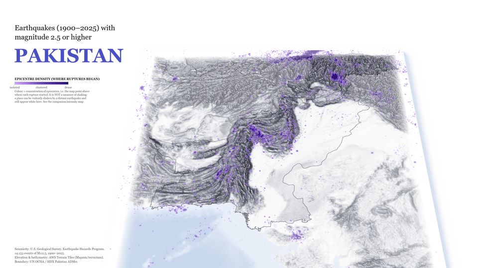
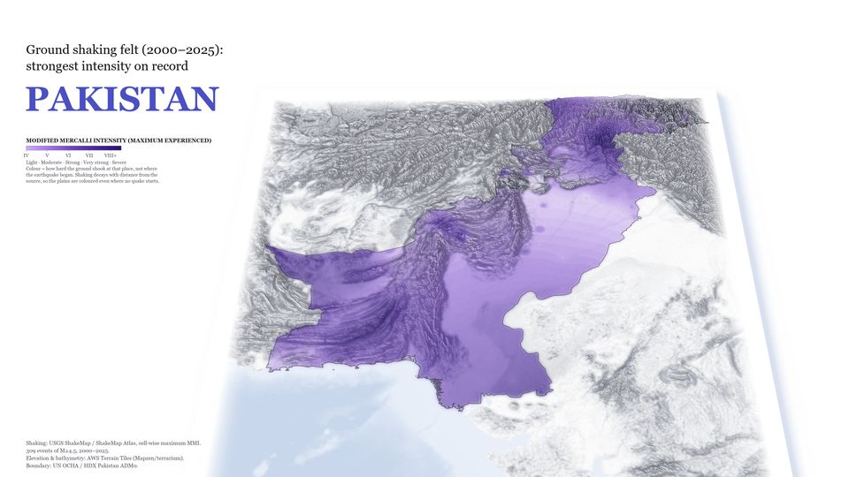
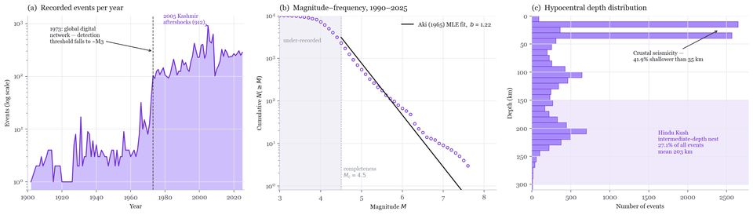

Pakistan · 1900–2025
Earthquake origin versus earthquake impact
The Punjab plain has 61 catalogued epicentres against 840 in the Sulaiman–Kirthar belt at the same latitudes. Yet 98.4% of Pakistan has felt at least MMI IV since 2000, and 28.9% has felt MMI VI or more.
An epicentre map is the usual way to show seismic risk, and it understates exposure exactly where most people live. Lahore's strongest shaking came from a rupture 340 km away. The companion map shows shaking received, built by compositing the maximum intensity from every USGS ShakeMap grid since 2000.

- Data
- USGS ComCat catalogue (12,715 earthquakes, M ≥ 2.5); USGS ShakeMap grids for 309 events; AWS Terrain Tiles elevation and bathymetry; UN OCHA boundaries
- Methods
- Gaussian kernel density, cell-wise maximum MMI composite, Gutenberg–Richter fit, catalogue completeness check
- Tools
- Python, NumPy, SciPy, DuckDB, Matplotlib, Pillow; custom oblique renderer